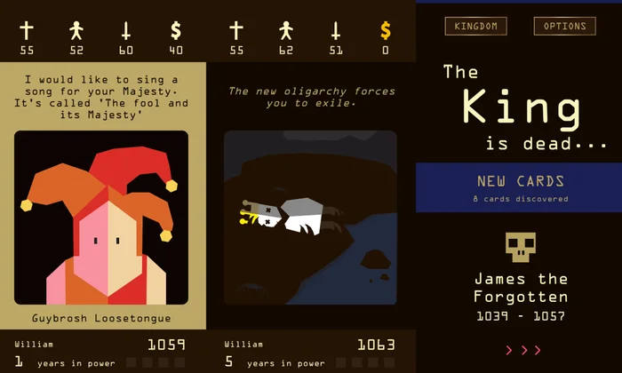

Reigns aplicat a la gestió sanitària pública
Com es prepara un debat ètic sobre intel·ligència artificial i sanitat? Amb un joc. Abans de les sessions de discussió, vam posar als estudiants a la pell del Conseller o la Consellera de Salut. La missió: gestionar el sistema sanitari català durant 16 anys i sobreviure a les conseqüències de cada decisió.
La mecànica és la mateixa que la del popular Reigns: decisions binàries (esquerra o dreta) que afecten simultàniament diversos indicadors. Cada carta és un dilema: invertir en un nou algoritme de diagnòstic, privatitzar un servei, prioritzar l'autonomia mèdica, etc. Cada resposta mou els valors de quatre eixos clau. Si un d'ells s'enfila massa o s'enfonsa del tot, la partida s'acaba.

Aquests són els quatre indicadors que el jugador ha de mantenir en equilibri:
- Pacients: qualitat assistencial, privacitat i humanització.
- Professionals sanitaris: autonomia, càrrega de treball i transparència.
- Pressupost públic: viabilitat econòmica del sistema.
- Medi ambient: costos materials, energètics i socials associats a les tecnologies.
L’objectiu del joc no és només arribar al torn 16, sinó exposar els participants a conflictes d’interès reals. Cada escenari està dissenyat perquè no hi hagi respostes correctes, només prioritats ètiques diferents. Les decisions preses durant la partida es converteixen després en matèria de debat i, agregades, dibuixen el perfil ètic del grup.
Pots jugar al joc directament aquí sota:
Dos perfils ètics oposats
Si mirem els resultats, observem diferents indicadors destacables. En quant als torns que van aconseguir completar per cada partida, el gràfic no dibuixa una corba normal. Hi ha un pic claríssim al torn 5 i un altre, quasi igual d’alt, al torn 16. Això vol dir que els estudiants no es van distribuir de forma homogènia: es van polaritzar en dos comportaments molt definits.
El primer grup, el del pic al torn 5, va jugar amb una ètica de principis. Van prendre decisions coherents amb els seus valors i conviccions fins a perdre. Prioritzaven seguir un criteri que consideraven just i per contra, van descuidar altres eixos. El resultat: un col·lapse prematur. És el perfil del polític que prefereix caure abans de trair les seves conviccions, i com s'ha vist, no van aconseguir acabar el seu mandat.
L’altre extrem, el del torn 16, representa la supervivència a través del compromís. Aquests jugadors van modular cada decisió, equilibrant els quatre eixos. Van arribar al final del mandat, però sovint a canvi de renunciar a posicions radicals o prenent decisions menys justes. És el perfil del gestor pragmàtic que prioritza la continuïtat del sistema per sobre de la puretat ideològica.
Els motius de la derrota
Si mirem quins han estat els motius pels quals han finalitzat els mandats dels estudiants que no han arribat als 16 torns, la resposta dibuixa un patró clar: l’esgotament del pressupost és, amb diferència, la causa més freqüent.
En molts moments del joc, les opcions que millor protegien els pacients i els professionals també eren les que costaven més diners. Escollir una vegada i una altra el benestar de les persones per davant dels interessos econòmics és, precisament, el que acaba provocant aquest tipus de col·lapse.
Això encaixa amb una manera d’entendre l’ètica en què protegir les persones és el més important, encara que tingui conseqüències econòmiques. Els diners es poden perdre, però la dignitat humana es preserva. És aquesta la derrota més digna de totes?
Què acceptaríem delegar a la IA?
Després del joc, els estudiants van respondre una enquesta amb preguntes més desenvolupades i recursos periodístics sobre casos reals d’IA a la sanitat. En total, 28 persones. Les respostes reforcen el que ja s’intuïa durant la partida: la societat està disposada a cedir terreny a la intel·ligència artificial, però amb una condició innegociable: que hi hagi un professional humà al darrere.
Suport sí, substitució no
La conclusió més clara és transversal: la gran majoria accepta la IA com a eina de suport a la decisió clínica, però rebutja que prengui decisions per si sola.
ClinIA: el metge decideix, la màquina ajuda
Quan se’ls presenta un sistema hipotètic, ClinIA, amb una precisió diagnòstica superior a la dels metges en radiografies, la resposta dominant és contundent: 15 persones volen que sigui "només una eina de suport per al metge". 7 més estarien disposades a delegar-li el diagnòstic inicial, sempre passant després a mans humanes. La idea de deixar la màquina sola, fins i tot en casos rutinaris, només la defensen 3 persones.
Però el context canvia les coses. Quan se’ls afegeix que el sistema està saturat i genera proves innecessàries, la distribució es reparteix més. 10 persones mantenen que hauria de ser suport, però 9 ja acceptarien que fes el diagnòstic inicial. La saturació fa augmentar la disposició a delegar, però mai a renunciar del tot al control humà.
Suport psicològic: la línia vermella
La pregunta amb el resultat més contundent és la de l’ús de la IA per donar suport psicològic. 13 persones responen un rotund "no, pot ser perillós", i 7 més exigeixen supervisió professional. És especialment significatiu perquè contrasta amb l’acceptació de la IA en diagnòstic per imatge. La dimensió relacional i emocional de la medicina és on la societat traça la línia més clara: hi ha aspectes humans i de tracte que la IA no pot substituir.
El missatge global és clar
La IA té un lloc a la sanitat, però sempre es veu com a instrument al servei de les persones, mai com a substitut. I en certes branques de la cura, l’empatia, la contenció emocional i la decisió ètica, el metge es continua considerant irreemplaçable.